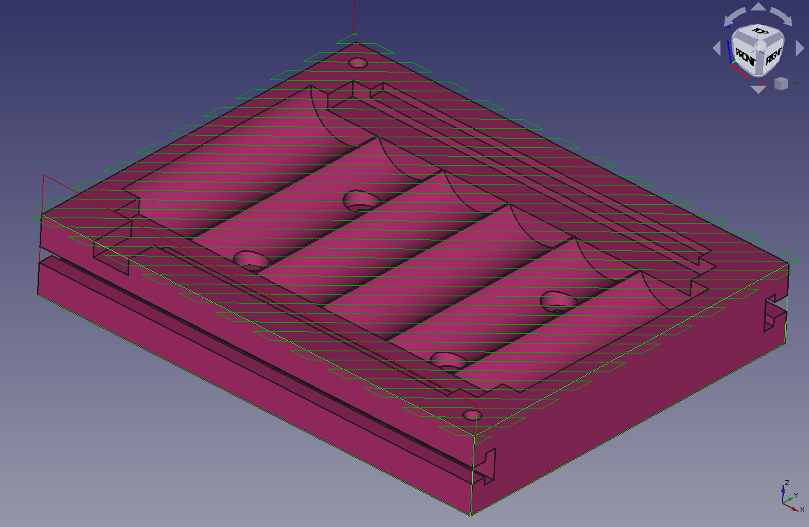

CAM MillFace/tr
|
Yüzeyden |
| Menü konumu |
|---|
| CNC G-Kodu → Yüzeyden |
| Tezgahlar |
| CNC G-Kodu |
| Varsayılan kısayol |
| Hiçbiri |
| Versiyonda tanıtıldı |
| - |
| Ayrıca bkz |
| Hiçbiri |
THIS COMMAND IS OBSOLETE
It is not available in 26.3 and above.
It is not available in 26.3 and above.
|
|
| Menu location |
|---|
| CAM → Face |
| Workbenches |
| CAM |
| Default shortcut |
| None |
| Introduced in version |
| - |
| See also |
| None |
Description
The  CAM MillFace command creates a path to perform a facing operation on a horizontal surface. This operation is generally used:
CAM MillFace command creates a path to perform a facing operation on a horizontal surface. This operation is generally used:
- to smooth out a rough stock surface,
- to mill selected face(s) to desired depth in preparation for performing subsequent clearing operations within the boundary of the regions affected by this operation,
- or to apply a finishing surface to the selected face(s).
This operation contains a VeriBoundaryShape property that allows for a modified selection area based upon the selected face(s).
{kind=link}

Usage
- Select one or more faces to be surfaced. Note: If selected faces exist at different heights, then all will be milled to the Final Depth setting.
- There are several ways to invoke the command:
- Press the
 Face button.
Face button. - Select the CAM → Face option from the menu.
- Press the
- Select the correct VeriBoundaryShape setting to modify the milling area based on the face(s) selected as Base Geometry.
- Adjust the other properties as needed. They are listed further below.
Caveats
- Using it on an inclined plane may produce unexpected results: it will still produce a path to cut a horizontal surface. The extent of the cut will be the vertical projection of the inclined plane, performed at a height corresponding to the lowest point in that plane.
- Since the CAM tools work on the geometry of the selected edges/faces only, and do not relate to the rest of the 3D model, the paths will not go beyond the bounds of the chosen plane, even if it is surrounded by unused stock or air. This will leave unmachined corners. These can sometimes removed with one of the dress-up tools to be found on the CAM menu.
Vertical face milling
- This tool will not work on a vertical plane or vertical non planar surface. Vertical operations can be achieved by using the face profile tool or edge profile tool. These will need the selection of a face or closed loop of edges including the top or bottom edge of the vertical surface desired). The extent of the path can then be reduced using the Boundary Dress-up tool to be found on the CAM menu. With the Dress-up tool, select Create Box option and reduce the size to limit the scope of the profile path. These settings will not allow the origin of the boundary box to be moved, however. This must be done by adjusting the Placement settings in the Tree View.
- This will work on compound surfaces such as several vertical planes or cylindrical surfaces joined together, so long as they form one continuous surface.
Properties
Note : The names of some Properties in this list differ a little from the same settings used in the Task Window Editor.
Data
Base
Note: It is suggested that you do not edit the Placement property of path operations. Rather, move or rotate the CAM Job model as needed.
- VeriPlacement: Overall placement [position and rotation] of the object - with respect to the origin (or origin of parent object container)
- VeriAngle: Angle in degrees applied to rotation of the object around Axis property value
- VeriAxis: Axis (one or multiple) around which to rotate the object, set in sub-properties: X, Y, Z
- VeriX: X-axis value
- VeriY: Y-axis value
- VeriZ: Z-axis value
- VeriPosition: Position of the object, set in sub-properties: X, Y, Z - with respect to the origin (or origin of parent object container)
- VeriX: X-distance value
- VeriY: Y-distance value
- VeriZ: Z-distance value
- VeriLabel: User-provided name of the object (UTF-8)
Depth
- VeriClearance Height: The height needed to clear clamps and obstructions
- VeriFinal Depth: Final Depth of Tool- lowest value in Z
- VeriFinish Depth: Maximum material removed on final pass.
- VeriSafe Height: The above which Rapid motions are allowed.
- VeriStart Depth: Starting Depth of Tool- first cut depth in Z
- VeriStep Down: Incremental Step Down of Tool
Face
- VeriBoundaryShape: Shape to use for calculating Boundary
- VeriClearEdges: Clear edges of surface (Only applicable to BoundBox)
- VeriExcludeRaisedAreas: Exclude milling raised areas inside the face.
- VeriOffset Pattern: Clearing pattern to use. (Select in which manner the horizontal movements should be done.)
Path
- VeriActive: Make False, to prevent operation from generating code
- VeriBase: The base geometry for this operation
- VeriComment: An optional comment for this Operation
- VeriCoolant Mode: The coolant mode for this operation.
- VeriCycle Time: The cycle time estimation for this operation.
- VeriTool Controller: Defines the Tool controller used in the Operation
- VeriUser Label: User assigned label
- VeriCut Mode: The direction that the toolpath should go around the part ClockWise (CW) or CounterClockWise (CCW)
- VeriExtra Offset: Extra offset to apply to the operation. Direction is operation dependent.
- VeriStartAt: Start pocketing at center or boundary
- VeriStep Over: Percent of cutter diameter to step over on each pass
- VeriZig Zag Angle: Angle of the zigzag pattern
- VeriOffset Pattern: Clearing pattern to use
- VeriMin Travel: Use 3D Sorting of Path
- VeriKeep Tool Down: Attempts to avoid unnecessary retractions.
Rotation
- VeriAttempt Inverse Angle: Automatically attempt Inverse Angle if initial rotation is incorrect.
- VeriEnable Rotation: Enable rotation to gain access to pockets or areas not normal to Z axis.
- VeriInverse Angle: Inverse the angle of the rotation. Example: change a rotation from -22.5 to 22.5 degrees.
- VeriLimit Depth To Face: Enforce the Z-depth of the selected face as the lowest value for final depth. Higher user values for final depth will be observed.
- VeriReverse Direction: Reverse orientation of Operation by 180 degrees.
Start Point
- VeriStart Point: The custom start point for the path of this operation.
- VeriX: X-distance value
- VeriY: Y-distance value
- VeriZ: Z-distance value
- VeriUse Start Point: Make True, if manually specifying a Start Point. Set the start point in the property data Start Point field.
- Project Commands: New Job, Post Process, Sanity Check, Export Template
- Tool Commands: Inspect Toolpath, Legacy CAM Simulator, CAM Simulator, Finish Selecting Loop, Toggle Operation, ToolBit Library Manager, Add toolbit…
- Basic Operations: Profile, Pocket Shape, Face, Helix, Adaptive, Slot, Drilling, Tapping, Engrave, Deburr, Vcarve
- 3D Operations: 3D Pocket, 3D Surface, Waterline
- CAM Dressup: Array, Axis Map, Boundary, Dogbone, Drag Knife, Lead In/Out, Ramp Entry, Tag, Z Depth Correction
- Supplemental Commands: Comment, Stop, Custom, Probe, Path From Shape TC
- CAM Modification: Copy oOperation, Array, Simple Copy
- Specialty Operations: Thread Milling
- Miscellaneous: Area, Area Workplane
- ToolBit architecture: Tools, ToolShape, ToolBit, ToolBit Library, ToolController
- Additional: Preferences, Scripting
- Getting started
- Installation: Download, Windows, Linux, Mac, Additional components, Docker, AppImage, Ubuntu Snap
- Basics: About FreeCAD, Interface, Mouse navigation, Selection methods, Object name, Preferences, Workbenches, Document structure, Properties, Help FreeCAD, Donate
- Help: Tutorials, Video tutorials
- Workbenches: Std Base, Assembly, BIM, CAM, Draft, FEM, Inspection, Material, Mesh, OpenSCAD, Part, PartDesign, Points, Reverse Engineering, Robot, Sketcher, Spreadsheet, Surface, TechDraw, Test Framework
- Hubs: User hub, Power users hub, Developer hub